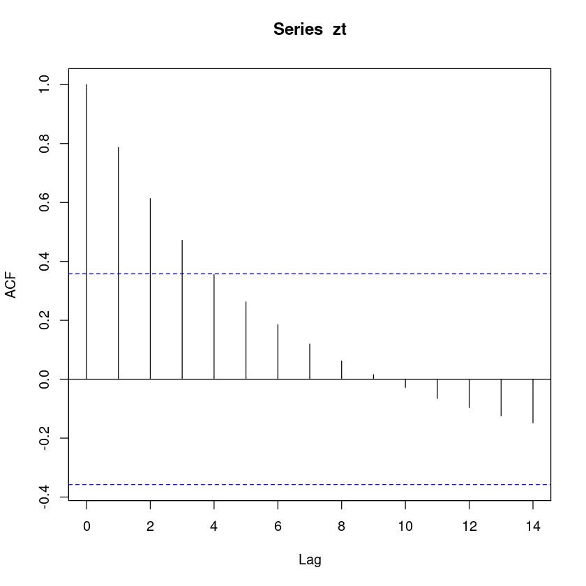
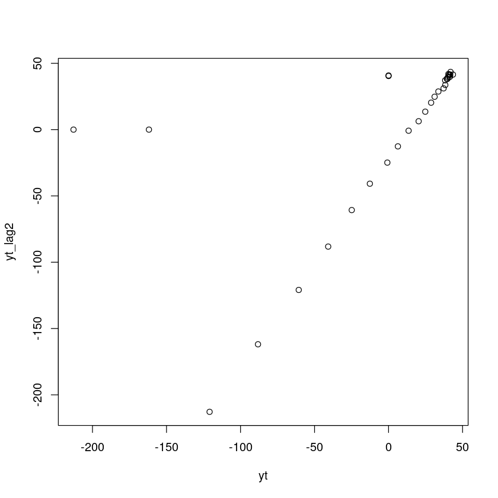
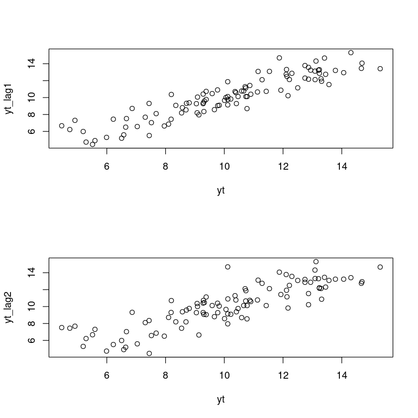

연습문제 5.3, 5.4 실습
연습문제 5.3
아래와 같이 자료를 입력한다.
(a)
시계열 그림을 그려라.
(b)
(a)의 시계열로부터 \(\rho_1\)은 양수, \(0\), 혹은 음수 중 어느 값이라 기대되는가?
- \(\rho_1>0\) 일 것으로 기대함.
(c)
\(Z_t\)에 대하여 \(Z_{t-1}\)의 산점도를 그려보고, 다시 \(\rho_1\)은 어느 정도의 값이 되리라 기대되는가?
- acf의 계수값은 regression을 한 coefficient의 계수값이라고 생각해도 된다.
(d)
SACF \(\hat{\rho}_k,k=0,1,\dots,10\) 를 구하여 표본상관도표를 그려라.
- 1
- 0.786722460931916
- 0.613109056697059
- 0.471348396076132
- 0.355433182826737
- 0.262330587211975
- 0.184887312015886
- 0.119317044820866
- 0.0619703872087451
- 0.0152480323267708
- -0.0278522483752027
- -0.0654859242598054
- -0.0965225838496274
- -0.124280187334351
- -0.148215235099583

(e)
\(Z_t\)에 대하여 \(Z_{t-2}\)의 산점도를 그려보고, 이 그림이 (d)에서 계산된 \(\hat{\rho}_2\)에 상응하는지를 논하라.
yt<-c(zt-mean(zt),0,0)
yt_lag1<-c(0,zt-mean(zt),0)
yt_lag2<-c(0,0,zt-mean(zt))
plot(yt,yt_lag2)
lm(yt~yt_lag2)$coefficients[2]
sacf를 구하는 방법 1
gamma_0 <- sum(yt*yt)
gamma_1 <- sum(yt*yt_lag1)
rho1 <- gamma_1/gamma_0
gamma_2 <- sum(yt*yt_lag2)
rho2 <- gamma_2/gamma_0
cat(rho1, rho2)0.7867225 0.6131091sacf를 구하는 방법 2
- 1
- 0.786722460931916
- 0.613109056697059
- 0.471348396076132
- 0.355433182826737
- 0.262330587211975
- 0.184887312015886
- 0.119317044820866
- 0.0619703872087451
- 0.0152480323267708
- -0.0278522483752027
- -0.0654859242598054
- -0.0965225838496274
- -0.124280187334351
- -0.148215235099583
sacf를 구하는 방법 3
# (1) rho1을 구하는 법: yt ~ yt_lag1
lm(yt~yt_lag1)$coef[2]
# (2) rho2을 구하는 법: yt ~ yt_lag2
lm(yt~yt_lag2)$coef[2]- 위에 있는 그래프의 기울기가 아래에 있는 그래프의 기울기보다 조금 더 가파르게 나타난다. (아주 미세한 차이지만..)
- 즉, yt와 lag1의 correlation이 yt와 lag2의 correlation 보다 강하다고 추측을 할 수 있다.
(f) SPACF를 구하라.
SPACF \(\hat{\phi}_{kk},k=1,2,\dots,10\)을 구하여 표본상관도표를 그려라.
- 0.91514283237285
- 0.0970991636235123
- 0.0278031295172364
- 0.0023436840732835
- -0.0600699044140887
- -0.111745287421941
- 0.0806370704842164
- 0.0103045961231946
- 0.132408978544161
- 0.0315743336953914
- -0.088386730109637
- -0.0584577460737368
- -0.0449250521921251
- 0.0454941857858855
- 0.0338085090119136
- -0.00692664075719595
- 0.00155392924426564
- 0.0311171061759323
- -0.171366229465896
- -0.0224072170637755

- 파란 점선보다 작으면 \(0\)으로 봐도 무방하다.
- PACF는 Lag=1일 때를 제외하고 나머지는 절삭된다. \(\to\) Lag1은 의미있다. \(\to\) AR(1) 모델로 추정.
그림만 보면 non-stationary한 것 같지만 20번째 이후로는 일정한 값만 갖는다.
결국 시계열에서 \(-\infty \sim \infty\) 시점에서 stationary 한지 따져보는 방법과, 0시점에서 시작해서 \(\infty\) 까지 갈 때 stationary 한지 따져보는 방법이 있는데 지금은 0시점에 시작해서 무한대까지 가는 시계열이라고 해석을 할 수 있고, 무한대로 갔을 때 stationary하게 400 근처에 있을 것.
(번외) stationary한지 테스트하는 방법이 있다. adf test 했을 때 non-stationary라고 나오지만 여러 이론적 근거를 봤을 때 무한대로 갔을 때 무한대 부분만 따로 잘라서 보면 stationary하겠구나 라는 것을 추측해볼 수 있다.
(g) : \(\hat{\phi}_{22}\)의 의미:
교재의 설명: \(\hat{\phi}_{22}\)는 \(Z_t\)와 \(Z_{t+2}\)로부터 \(Z_{t+1}\)의 효과를 제거한후 2시차만큼 떨어진 \(Z_t\)와 \(Z_{t+2}\)의 순수한 상관계수. (p.199)
좀더 엄밀한 정의
- partial correlation (conditional correlation)1
- coefficients in the multiple regression model2
- (orthogonalization) partial regression coefficients – back fitting이라고도 함.3
이전 시간에 다중회귀를 통해서 회귀계수를 구하는 것과 back-fitting을 통해서 회귀계수를 구하는 것과 결과가 동일함을 증명했었다.
(방법1): 가장 쉬운 방법
lag=2에선 SPACF, 즉 \(\hat{\phi}_{22}\)는 아래와 같이 구할수 있다.
(방법2) multiple linear regression
- 'coefficients'
- 'residuals'
- 'effects'
- 'rank'
- 'fitted.values'
- 'assign'
- 'qr'
- 'df.residual'
- 'xlevels'
- 'call'
- 'terms'
- 'model'
(참고) : - lm1$coefficients[2] : \(\phi_{21}\).4 - lm(yt~yt_lag1)$coef[2] : \(\phi_{11}\) 첫번재 pacf
(방법3) Back-fitting
- step1: residual을 구한다.
- step2: residual끼리 regression
- step3: 적합한 모델의 coef
## step1
res1 <- lm(yt~yt_lag1)$res
res2 <- lm(yt_lag2~yt_lag1)$res
lm(res1~res2)$coef[2] # pacf(zt)$acf[2]
## residual
lm01<-lm(yt~yt_lag1)
lm21<-lm(yt_lag2~yt_lag1)
res1<-lm01$residuals
res2<-lm21$residuals
lm(res1~res2)$coefficients[2] # pacf(zt)$acf[2]lm1$coefficient[3]: \(\phi_{21}\)lm(yt~yt_lag1)$coef[2]: \(\phi_{11}\)
연습문제 5.5
확률과정 \(Z_t=1+0.9Z_{t-1}+\epsilon_t\), \(t=1,2,\dots,100\)으로부터 시계열 자료를 생성한 후 다음을 수행하라. 단, \(Z_0=10\)의 값을 주고 \(\{\epsilon_t\}\)는 \(\text{WN}\) \(N(0,1)\)이다.
model: \(Z_t=1+0.9Z_{t-1}+\epsilon_t\), \(t=1,2,\dots,100\).
set.seed(1306) # 평행세계의 인덱스 (1306번째 평행세계)
zt<-c() # 차원이 미지수인 벡터
zt[1]<-1+0.9*10+rnorm(1)
# zt[2]<-1+0.9*[1]+rnorm(1)
# zt[3]<-1+0.9*z[2]+rnorm(1)
for(i in 2:100) zt[i]<-1+0.9*zt[i-1]+rnorm(1)
zt- 10.7776751561233
- 10.6609622856125
- 11.1299241242987
- 10.7296526182932
- 9.38278837110085
- 9.29109019895927
- 10.4122689883349
- 9.28067089058084
- 9.2789901605081
- 9.0501570067217
- 9.77713424796791
- 9.382743702739
- 8.80552070415711
- 8.57407176217217
- 9.66366581234691
- 10.008613208163
- 10.0576413774417
- 9.08897935853339
- 9.82764653363022
- 10.2218444148992
- 12.1704447684576
- 12.8681141018021
- 13.2367603965488
- 12.9391055984287
- 14.0648285969126
- 14.6894154466569
- 11.8745739061673
- 10.1171355506358
- 10.7362362555572
- 11.4278736905948
- 10.8704928947355
- 11.9263131810541
- 13.313631225092
- 12.1190229649772
- 13.0917495632854
- 11.5376226866627
- 13.5642568416322
- 12.8672694942753
- 12.3012258423447
- 12.7469345900269
- 13.4507736238183
- 14.6673849854053
- 13.4116727284831
- 15.3076736011676
- 14.310806695614
- 13.1222429226028
- 13.0875104346435
- 11.1517386419
- 12.5003171167307
- 12.134043120466
- 12.2162396641911
- 13.2946087354648
- 13.2366898509952
- 13.2061567161538
- 13.783242311133
- 12.7466777939187
- 12.1071555541528
- 11.2869817913499
- 10.7095254338173
- 10.3660192453498
- 8.19741429242647
- 9.07563267311609
- 8.34939290557436
- 9.30553314042619
- 7.43977450826777
- 8.19004274210617
- 8.54662906416369
- 8.69613491505516
- 10.7738789590646
- 10.5915715594163
- 10.3945561629718
- 10.9027471497513
- 9.77026311751489
- 10.1223165078856
- 10.469192739694
- 9.58771700080272
- 9.32100352879754
- 8.7135344295127
- 6.86349437174187
- 8.10294090902059
- 7.68102522415767
- 7.30921467667611
- 4.91584446653772
- 5.59736306277825
- 6.57778433680285
- 7.03791396797598
- 7.51873623749475
- 6.66901822423143
- 4.46500939137639
- 5.51430833462341
- 7.44595964893556
- 6.22242514118676
- 4.74081983358706
- 5.29462908147751
- 5.99127876210288
- 5.19673221133857
- 6.50505386512762
- 6.6438975765325
- 7.95816370026611
- 9.1357435140494
(a)

(b)
- 1
- 0.91514283237285
- 0.853266337927077
- 0.798375054409032
- 0.746598547202508
- 0.688437899511834
- 0.618941200705302
- 0.572652626007743
- 0.528666420762899
- 0.507320782302746
- 0.485274192476317
- 0.449732274009753
- 0.414716165196433
- 0.378867532330867
- 0.356953087806519
- 0.332744790957889
- 0.304122683010979
- 0.278542289685101
- 0.262531969561571
- 0.226429133053414
- 0.194780443141645
(c)
- 0.91514283237285
- 0.0970991636235123
- 0.0278031295172364
- 0.0023436840732835
- -0.0600699044140887
- -0.111745287421941
- 0.0806370704842164
- 0.0103045961231946
- 0.132408978544161
- 0.0315743336953914
- -0.088386730109637
- -0.0584577460737368
- -0.0449250521921251
- 0.0454941857858855
- 0.0338085090119136
- -0.00692664075719595
- 0.00155392924426564
- 0.0311171061759323
- -0.171366229465896
- -0.0224072170637755

(d) - (e)
par(mfrow=c(2,1))
yt<-c(zt,mean(zt),mean(zt)) # yt<-c(zt-mean(zt),0,0)
yt_lag1<-c(mean(zt),zt,mean(zt))
yt_lag2<-c(mean(zt),mean(zt),zt)
plot(yt,yt_lag1)
plot(yt,yt_lag2)
- 양의 상관관계를 보인다.
- lag2는 lag1보다는 약한 상관관계를 보인다.
- 1307번째 평행세계, 2000번째 평행세계,… 계속 반복을 하다보면 값들의 평균이 결국 \(0.9\) 로 수렴한다.
- acf값이 큰수의 법칙에 따라 true acf값으로 수렴하게 될 것이다.
Footnotes
그 자체로 설명 (교회와 범죄 얘기~↩︎
1의 정의가 multiple regression model에서의 계수와 똑같아짐을 얘기했다. \(Z_t \sim Z_{t-1} + Z_{t-2}\) 이렇게 regression 을 했을 때 \(Z_{t-2}\)에 해당하는 coefficients↩︎
residual을 구한다는 말은 평면에 projection 시키고 남은 값을 구하는 건데 \(Z_t\)를 평면에 프로젝션 시키면 프로젝션 된 값 SSH에 해당하는 값과 그것의 residual에 해당하는 값 SSE라는 값들은 서로 직교합니다. 즉, 서로 상관이 없어요. 그래서 residual을 구하는 것을 \(Z_{t-1}\)로 설명하지 않는 나머지의 성분 즉, 직교성분들로 구한느 것과 동일해서 orthogonalization이라는 표현을 쓰기도 합니다.↩︎
rho도 아니고, partial autocorrelation도 아님. 그냥 방정식 상의 phi{21}이 되는 것입니다.↩︎